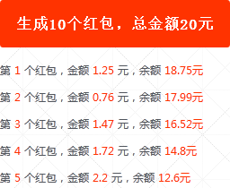

基本流程：当输入完红包数量和总金额后，PHP会根据这两个值进行随机分配每个金额，保证每个人都能领取到一个红包，且每个红包金额不等，并且所有红包金额总额等于总金额。
实现原理：
设定总金额为10元，有N个人随机领取：
N=1 第一个
则红包金额=X元；
N=2 第二个
为保证第二个红包可以正常发出，第一个红包金额=0.01至9.99之间的某个随机数
第二个红包=10-第一个红包金额；
N=3 第三个
红包1=0.01至9.99之间的某个随机数
红包2=0.01至(10-红包1-0.01)的某个随机数
红包3=10-红包1-红包2
……
于是我们得到一个规律，在分配当前红包金额时，先预留剩余红白所需最少金额，然后在0.01至总金额-预留金额间取随机数，得到的随机数就是当前红包分配的金额。
实际应用中，程序先将红包金额分配好，即发红包时，红包个数以及每个红包的金额都分配好了，那么用户来抢红包时，我们随机给用户返回一个红包即可。
js代码：
1 $(function() {
2 $("button").click(function() {
3 $.ajax({
4 type: 'POST',
5 url: 'bao.php',
6 dataType: 'json',
7 beforeSend: function() {
8 $("#result").html('正在分配红包');
9 },
10 success: function(json) {
11 if (json.msg == 1) {
12 var str = '';
13 var res = json.res;
14 $.each(res,
15 function(index, array) {
16 str += '<p>第<span>' + array['i'] + '</span>个红包，金额<span>' + array['money'] + '</span>元，余额<span>' + array['total'] + '元</span></p>';
17 });
18 $("#result").html(str);
19 } else {
20 $("#result").html('数据出错！');
21 }
22 }
23 });
24 });
25 });
bao.php源码：
1 $total=20;//红包总金额
2 $num=10;// 分成10个红包，支持10人随机领取
3 $min=0.01;//每个人最少能收到0.01元
4
5 for ($i=1;$i<$num;$i++)
6 {
7 $safe_total=($total-($num-$i)*$min)/($num-$i);//随机安全上限
8 $money=mt_rand($min*100,$safe_total*100)/100;
9 $total=$total-$money;
10
11 echo '第'.$i.'个红包：'.$money.' 元，余额：'.$total.' 元 ';
12 }
13 echo '第'.$num.'个红包：'.$total.' 元，余额：0 元';
本文转自：https://www.sucaihuo.com/php/322.html 转载请注明出处！